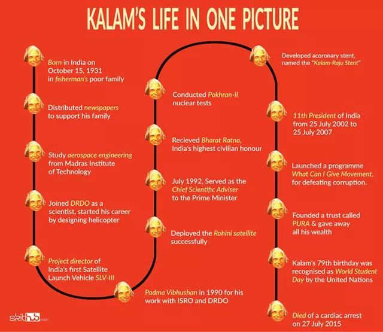

"Excellence is a continuous process and not an accident" -A.P.J.Abdul kalam
Avul Pakir Jainulabdeen Abdul Kalam (15 October 1931 27 July 2015) was an Indian aerospace scientist who served as the 11th president of India from 2002 to 2007.
He was born and raised in Rameswaram, Tamil Nadu and studied physics and aerospace engineering.
He spent the next four decades as a scientist and science administrator, mainly at the Defence Research and Development Organisation (DRDO) and Indian Space Research Organisation (ISRO) and was intimately involved in India's civilian space programme and military missile development efforts.[1]
He thus came to be known as the Missile Man of India for his work on the development of ballistic missile and launch vehicle technology.
He also played a pivotal organisational, technical, and political role in India's Pokhran-II nuclear tests in 1998, the first since the original nuclear test by India in 1974.
Timeline:

A Tribute from India to Dr Kalam
Dr Kalam has been honoured with the Padma Bhushan | Image Resource : thebetterindia.com
India plans to pay a great tribute to late Shri APJ Abdul Kalam. The New Brahmos Hypersonic is to be named after Dr Kalam. The missile will travel at the speed of 8,575 kmph and will have seven times the speed of Mach 7.
It is being developed by Indo Russian unit BrahMos Aerospace. There couldn’t be a greater tribute to a man who has been responsible for such a progress in missile engineering in India.
Dr Kalam has been honored with the Padma Bhushan in 1981, Padma Vibhushan in 1990 and the Bharat Ratna in 1997.
He has also been honored with National Space Society’s Von Braun Award in the year 2013.
He has received honorary doctorates from 40 universities around the world.
After his death, the Tamil Nadu Government has declared 15 October as Youth Renaissance Day.
The United Nations Organisation has declared 15 October, Dr Kalam’s birthday, as World Student’s Day.
TRIBUTE SONG
Awards and achievements
1981: Padma Bhushan – Government of India
1990: Padma Vibhushan – Government of India
1997: Bharat Ratna – Government of India
1997: Indira Gandhi Award for National Integration